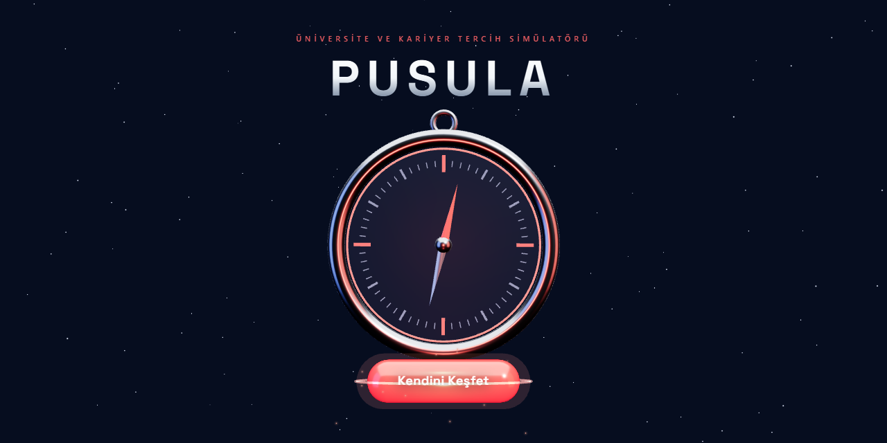
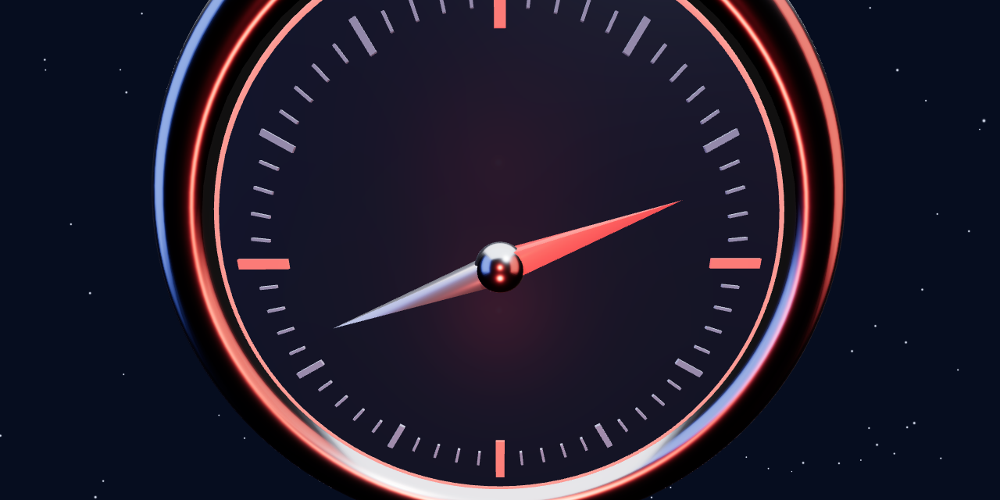
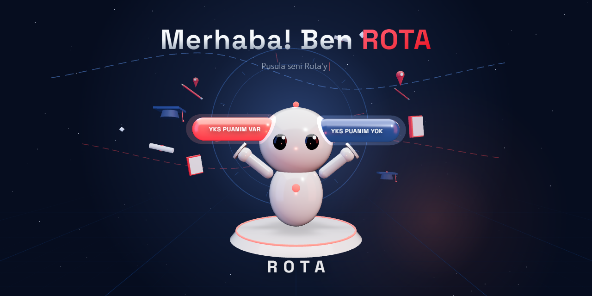
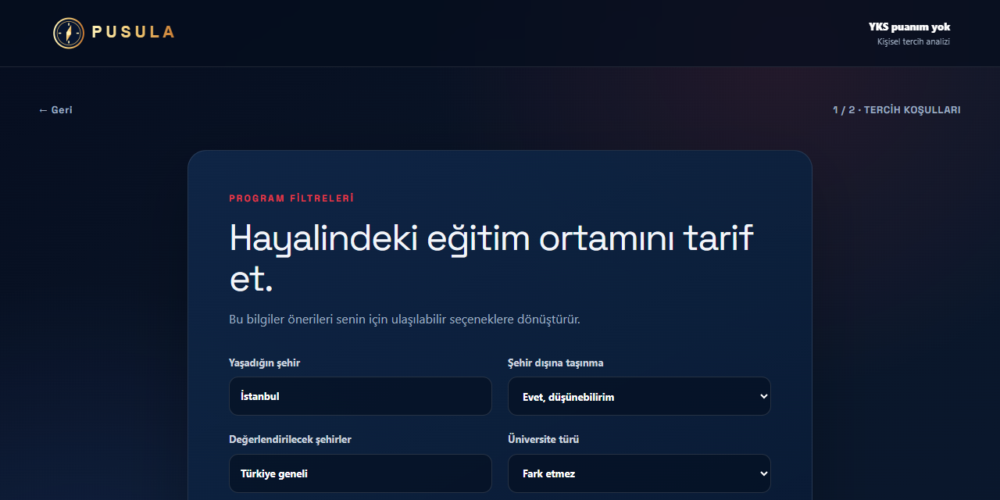
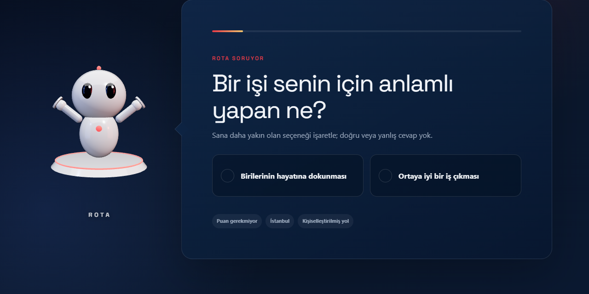
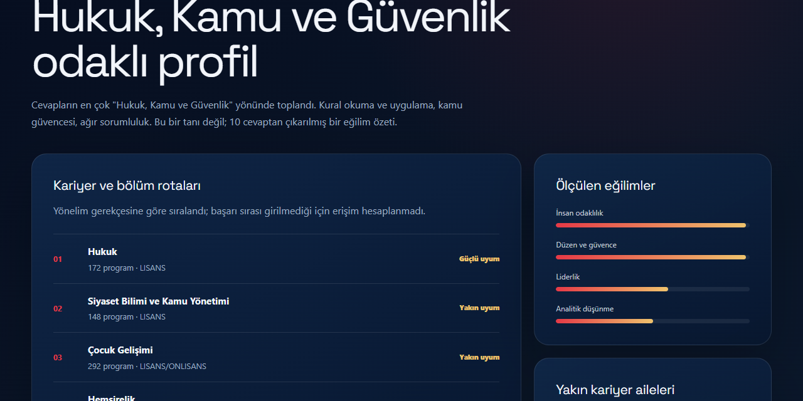

OverFit Hackathon · 2026
PUSULA
Üniversite ve kariyer tercih simülatörü —
3D giriş deneyimi, adaptif yönelim analizi ve gerçek YÖK Atlas 2026 verisi.

Problem
Tercih dönemi üç duvara çarpıyor
Çözüm
Tek deneyim, iki akış
Puanı olan da olmayan da aynı sinematik girişten geçer; ROTA robotu karşılar, 10 adaptif soruyla yönelimi çıkarır, sonuç gerçek veriye dayanır.
Deneyim · 1
Pusulanın içine uçuş
Three.js ile modellenen metal pusula fareyi takip eder; "Kendini Keşfet" butonu cam yüzeyin üzerinde süzülür. Tıklayınca kamera pusulanın içine uçar ve beyaz perdenin arkasında sahne değişir.

Deneyim · 2
ROTA ile tanışma
Sevimli robot karakteri ROTA, iki avucunda "YKS Puanım Var / Yok" seçimini sunar. Kafası imleci takip eder, göz kırpar; arkada kariyer temalı süzülen objeler ve dönen pusula gülü derinlik katar. Alt yazı daktilo animasyonuyla yazılır.

Deneyim · 3
Soruyu ROTA sorar
Tercih koşullarının ardından 10 adaptif soru başlar. Soru kartı, ROTA'ya dönük kuyruğuyla bir konuşma balonudur — robot quiz boyunca kullanıcıya eşlik eder.


Deneyim · 4
Analiz anı hissettirir
Son sorudan sonra dönen ışıklı halkanın merkezinde ROTA belirir; alttaki bar dolarken "Rota cevaplarını analiz ediyor…", "kariyer ailelerini eşleştiriyor…" mesajları akar. Bar dolunca sonuç sayfası açılır.

Sonuç
Öneri değil, veriye dayalı eşleştirme
Persona uyumu ile veriden gelen erişilebilirlik ayrı ayrı gösterilir. Her program yalnızca kendi puan türüyle karşılaştırılır; yayımlanmamış sıra asla tahmin edilmez, nedeni açıkça yazılır.

Teknik
Motor, arayüzden bağımsız bir paket
- Adaptif soru motoru: 80 soruluk havuz, 14 persona boyutu, 15 kariyer ailesi; her cevap bir sonraki soruyu bilgi kazancına göre değiştirir — gerçek yollarda %94,4 ayrışma.
- Deterministik geri alma: cevap değişince sonrası skordan tamamen düşer, yol yeniden kurulur; aynı cevap dizisi her zaman aynı sonucu üretir.
- Sıfır bağımlılık: motor saf JS; UI onu tek sözleşme noktasından (CONTRACT.md) kullanır, 3,2 MB katalog bundle dışından fetch edilir.
- 3D katman: responsive kamera her ekranda aynı kadrajı korur; ışıklar prosedürel — hiçbir doku indirilmez, tamamen çevrimdışı çalışır.
Kapanış
PUSULA ile herkes yolunu bulur
Puanı olan da olmayan da. Dürüst veri, sevimli bir yol arkadaşı ve gerçekten adaptif bir analiz.
- Bilinçli sınırlar: sorular editoryal incelemede (draft), kariyer ailesi ağırlıkları tek dosyada şeffaf varsayım, bağlayıcı kaynak her zaman ÖSYM kılavuzu.
- Sonraki adım: soruların pedagojik validasyonu, sonuç ekranında şehir karşılaştırması, PWA ile offline tercih listesi.
github.com/BerkayBilgenn/OverFit-Hackathon · Veri YÖK ve ÖSYM'ye aittir